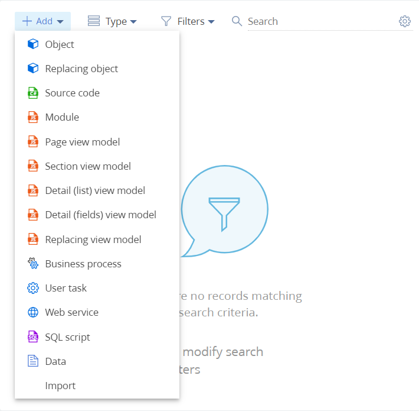
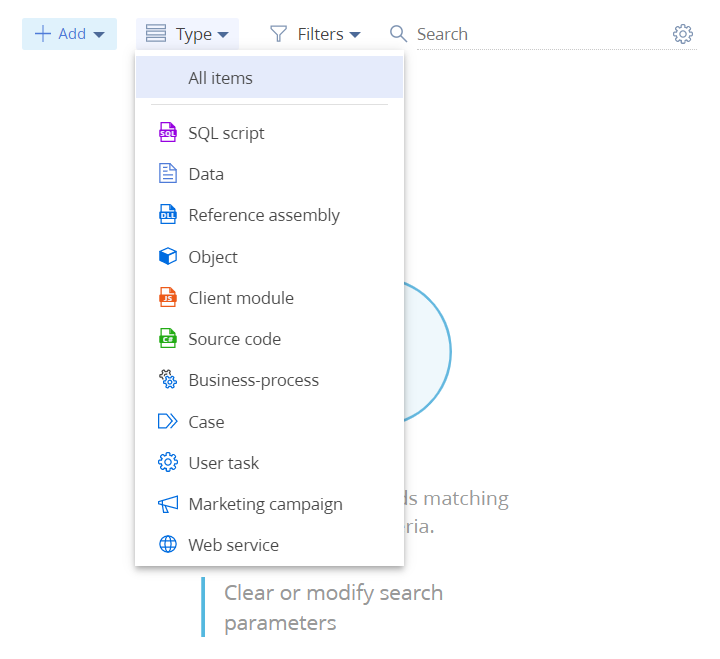

Creatio IDE — встроенная среда разработки для управления конфигурацией. Управление конфигурацией подразумевает реализацию сложной бизнес-логики, интеграции и настройки. Управление конфигурацией выполняется с помощью Creatio IDE, которая реализована в виде раздела Конфигурация (Configuration). Назначение раздела Конфигурация — управление конфигурационными элементами, при помощи которых реализована функциональность системы.
Настроить доступ к разделу Конфигурация
Доступ к разделу Конфигурация настраивается на уровне системных операций. По умолчанию доступ к основным системным операциям есть только у администраторов системы. Но его можно настроить для пользователей или групп пользователей. Настройка доступа к разделу Конфигурация:
- Перейдите в дизайнер системы по кнопке
 . В блоке Пользователи и администрирование (Users and administration) перейдите по ссылке Права доступа на операции (Operation permissions).
. В блоке Пользователи и администрирование (Users and administration) перейдите по ссылке Права доступа на операции (Operation permissions). - Выберите системную операцию Доступ к разделу "Конфигурация" (код CanManageSolution).
- На детали Доступ к операции (Operation permission) нажмите
 и укажите получателя прав. Запись появится на детали в колонке Уровень доступа (Access level) со значением Да (Yes), а пользователи, входящие в указанную роль, получат доступ к системной операции Доступ к разделу "Конфигурация" (код CanManageSolution).
и укажите получателя прав. Запись появится на детали в колонке Уровень доступа (Access level) со значением Да (Yes), а пользователи, входящие в указанную роль, получат доступ к системной операции Доступ к разделу "Конфигурация" (код CanManageSolution).
Если у пользователя нет доступа к разделу Конфигурация, то выдается стандартное сообщение с указанием операции и недостающих прав.
Открыть раздел Конфигурация
Способы перехода в раздел Конфигурация для фреймворка .NET Framework:
- По кнопке через дизайнер системы. В блоке Конфигурирование разработчиком (Admin area) перейдите по ссылке Управление конфигурацией (Advanced settings).
- По ссылке [Адрес приложения Creatio]/0/ClientApp/#/WorkspaceExplorer. Например, http://my.сreatio.com/0/ClientApp/#/WorkspaceExplorer.
- По алиасу /we. Например, http://my.сreatio.com/0/we.
- По алиасу /conf. Например, http://my.сreatio.com/0/conf.
- По алиасу /dev. Например, http://my.сreatio.com/0/dev.
Для фреймворка ASP.NET Core способы перехода в раздел аналогичны. Различие — не нужно использовать приставку /0.
Раздел Конфигурация будет открыт в новой вкладке.
Разработка конфигурации
Функциональные области интерфейса раздела Конфигурация:
- Панель инструментов (1).
- Область работы с пакетами (2).
- Рабочая область (3).

Инструменты раздела Конфигурация позволяют управлять:
- Разработкой в файловой системе.
- Пакетами.
- Конфигурационными элементами пакетов.
- Хранилищами системы контроля версий.
- Компиляцией конфигурации.
Разработка в файловой системе
Действия, связанные с разработкой в файловой системе, реализованы в группе Разработка в файловой системе (File system development mode) (4) выпадающего списка Действия (Actions) панели инструментов (1).
Группа действий Разработка в файловой системе (File system development mode) (4) позволяет:
- Загрузить пакеты из базы данных приложения в каталог ...\Terrasoft.WebApp\Terrasoft.Configuration\Pkg (пункт Выгрузить все пакеты в файловую систему (Download packages to file system)).
- Загрузить пакеты из каталога ...\Terrasoft.WebApp\Terrasoft.Configuration\Pkg в базу данных (пункт Обновить пакеты из файловой системы (Update packages from file system)).
Пункты группы действий Разработка в файловой системе (File system development mode) (4) доступны только при включенном режиме разработки в файловой системе. Подсказка по включению режима отображается при наведении курсора на название любого пункта текущей группы действий. Включение режима разработки в файловой системе описано в статье Внешние IDE.
Пакеты
Инструменты управления пакетами:
- Группа Пакеты (Packages) (5) выпадающего списка Действия (Actions) панели инструментов (1).
- Область работы с пакетами (2).
- Меню пакета.
Группа действий Пакеты (Packages) (5) позволяет открыть диаграмму зависимостей пакетов (Диаграмма зависимостей пакетов (Package dependencies diagram)).
Область работы с пакетами (2) позволяет:
- Выполнить поиск пакета по имени (строка поиска Поиск по пакетам (Search by package)).
- Создать пакет (кнопка ). При нажатии на кнопку будет отображено окно создания нового пакета, в котором можно задать название и описание пакета, добавить зависимости, а также указать хранилище системы контроля версий. Создание пакета описано в статье Создать пользовательский пакет.
- Посмотреть перечень пакетов приложения (группа Все пакеты (All packages)). Пакеты отображаются в алфавитном порядке. Вверху перечня отображаются измененные пакеты и пакеты, доступные для редактирования. При выборе текущей группы конфигурационные элементы всех пакетов приложения будут отображены в алфавитном порядке в рабочей области раздела Конфигурация (3). При выборе пакета группы в алфавитном порядке будут отображены конфигурационные элементы текущего пакета. Измененные пакеты находятся вверху перечня пакетов группы Все пакеты (All packages) и содержат символ
 возле имени пакета.
возле имени пакета.
Меню пакета можно вызвать по нажатию на в строке с названием пакета.

Меню пакета позволяет:
- Удалить пакет (пункт Удалить (Delete)). Пункт неактивен для предустановленных пакетов. Можно удалить пустые пакеты и пакеты с конфигурационными элементами, которые не являются родительскими. При попытке удалить пакет с родительскими конфигурационными элементами будет отображен перечень зависимых пакетов и элементов, зависимых от конфигурационных элементов удаляемого пакета, которые препятствуют удалению.
- Посмотреть свойства пакета (пункт Свойства (Properties)). Вкладка Свойства пакета (Package properties) позволяет настроить зависимости текущего пакета (если пакет доступен для редактирования). Также можно просмотреть системную информацию: кто создал и отредактировал пакет, даты создания и изменения, уникальный идентификатор, первичный ключ пакета в таблице базы данных. Открыть свойства пакета можно двойным кликом по имени пакета.
Конфигурационные элементы пакетов
Инструменты управления конфигурационными элементами пакетов:
- Группа Актуализировать элементы (Actualize items) (7) выпадающего списка Действия (Actions) панели инструментов (1).
- Группа Исходный код (Source code) (8) выпадающего списка Действия (Actions) панели инструментов (1).
- Панель инструментов рабочей области (3) раздела Конфигурация.
- Реестр рабочей области (3) раздела Конфигурация.
Группа действий Актуализировать элементы (Actualize items) (7) позволяет:
- Обновить структуру базы данных для конфигурационных элементов, которые требуют обновления (пункт Обновить структуру БД для требующих обновления (Update DB structure where it is needed)).
- Установить SQL-сценарии, которые требуют установки (пункт Установить SQL сценарии для требующих установки (Install SQL scripts where it is needed)).
- Установить данные, которые требуют установки (пункт Установить данные для требующих установки (Install data where it is needed)).
После завершения актуализации конфигурационных элементов вы получите уведомление.
Группа действий Исходный код (Source code) (8) позволяет:
- Генерировать исходный код для схем, которые были изменены в текущей конфигурации (пункт Сгенерировать для измененных (Generate for modified schemas)).
- Генерировать исходный код для схем, которые требуют генерации исходного кода (пункт Сгенерировать для требующих генерации (Generate where it is needed)).
- Генерировать исходный код для всех без исключения схем текущей конфигурации (пункт Сгенерировать для всех схем (Generate for all schemas)). Эта операция может занять длительное время (больше 10 минут).
Начиная с версии 7.18.4, генерация исходного кода для схем выполняется в фоновом режиме.
Особенности генерации исходного кода в фоновом режиме:
- Выполнение операции не влияет на работу основных пользовательских функций.
- Во время выполнения операции отсутствует возможность запуска генерации исходных кодов и компиляции приложения. При запуске этих действий приложение отобразит уведомление о выполняющейся операции.
- Во время выполнения операции не рекомендуется выполнять работы, которые требуют компиляции приложения, например, устанавливать приложения и расширения, настраивать интерфейс и бизнес-логику.
Уведомление о завершении генерации отобразится в коммуникационной панели.
Панель инструментов рабочей области (3) раздела Конфигурация представлена на рисунке ниже.

Панель инструментов позволяет:
- Выбрать вид конфигурационного элемента для добавления (выпадающий список Добавить (Add)). Предварительно необходимо выбрать пакет. Без выбора пакета пункты выпадающего списка Добавить (Add) остаются неактивными. В предустановленные пакеты конфигурационные элементы добавить невозможно. Возможные виды конфигурационных элементов для добавления представлены на рисунке ниже.

-
Загрузить в пользовательский пакет схему (*.md) или внешнюю сборку (*.dll) (пункт Импортировать (Import) выпадающего списка Добавить (Add)).
- Выбрать тип конфигурационных элементов для отображения в реестре раздела (выпадающий список Тип (Type)). Возможные типы конфигурационных элементов для отображения представлены на рисунке ниже.

Конфигурационные элементы с типом Клиентский модуль (Client module):
- Модуль (Module).
- Модель представления страницы (Page view model).
- Модель представления раздела (Section view model).
- Модель представления детали с реестром (Detail (list) view model).
- Модель представления детали с полями (Detail (fields) view model).
- Замещающая модель представления (Replacing view model).
Конфигурационные элементы с типом Объект (Object):
- Объект (Object).
- Замещающий объект (Replacing object).
- Выбрать состояния конфигурационных элементов для отображения в реестре раздела (выпадающий список Фильтры (Filters)). Настройки выпадающего списка Фильтры (Filters) сохраняются в профиле пользователя и отображаются при входе в раздел Конфигурация. Возможные состояния конфигурационных элементов для отображения представлены на рисунке ниже.

Конфигурационные элементы со значением Требующие актуализации (Need actualization) выпадающего списка Фильтры (Filters):
- SQL сценарий (SQL script) и Данные (Data) — при установленном свойстве Требует установки в БД (Needs to be installed in database).
- Объект (Object) — при установленном свойстве Требуется обновление в БД (Needs to be updated in database).
- Клиентский модуль (Client module), Исходный код (Source code), Кейс (Case), Маркетинговая кампания (Marketing campaign), Бизнес-процесс (Business-process), Действие процесса (User task) — при установленном свойстве Требует генерации исходного кода (Needs generate source code).
- Выполнить поиск конфигурационного элемента по имени в реестре раздела (строка поиска Поиск (Search)). Поиск выполняется в текущем пакете. Чтобы выполнять поиск по всем конфигурационным элементам пакетов, необходимо перейти в группу Все пакеты (All packages) области работы с пакетами (2). По нажатию
 настраиваются параметры поиска:
настраиваются параметры поиска:
- Поиск по заголовку (опция Поиск по полю "Заголовок" (Search by column "Title") — по умолчанию включена).
- Поиск по уникальному идентификатору (опция Поиск по полю "UID" (Search by column "UID") — по умолчанию выключена).
- Режим поиска. Возможные значения:
- Пункт Начинается (Starts with) — по умолчанию включен. Название конфигурационного элемента начинается с текста, который введен в строке поиска Поиск (Search).
- Пункт Содержит (Contains) — по умолчанию выключен. Название конфигурационного элемента содержит текст, который введен в строке поиска Поиск (Search).
- Пункт Равно (Equals) — по умолчанию выключен. Название конфигурационного элемента соответствует тексту, который введен в строке поиска Поиск (Search).
Для применения внесенных изменений нажмите Применить (Apply).
Настройки поиска сохраняются в профиле пользователя и отображаются при входе в раздел Конфигурация.
Реестр раздела рабочей области (3) раздела Конфигурация содержит перечень конфигурационных элементов. Свойства конфигурационных элементов реестра раздела представлены в таблице.
| Колонка | Описание | Дополнительные сведения |
|---|---|---|
| Название (Name) | Имя конфигурационного элемента, которое было задано при создании | Все конфигурационные элементы отсортированы в алфавитном порядке. Колонка позволяет посмотреть перечень измененных конфигурационных элементов (символ |
| Заголовок (Title) | Заголовок конфигурационного элемента | |
| Статус (Status) | Состояние конфигурационного элемента | Содержит значения выпадающего списка Фильтры (Filters).
Колонка Статус (Status) будет содержать
Колонка Статус (Status) будет содержать Если необходима актуализация конфигурационного элемента и при этом он содержит ошибку, то колонка Статус (Status) будет содержать |
| Тип (Type) | Тип конфигурационного элемента | |
| Объект (Object) | Объект, с которым связаны привязываемые к пакету данные | Колонка заполняется только для конфигурационного элемента Данные (Data). |
| Дата изменения (Modified on) | Дата изменения конфигурационного элемента | |
| Пакет (Package) | Название пакета, который содержит конфигурационный элемент |
При нажатии на в строке конфигурационного элемента будет отображено меню, которое зависит от значения колонки Тип (Type). Описание действий с конфигурационными элементами, которые можно выполнить с помощью меню конфигурационного элемента, приведено в таблице.
| Пункт меню | Действие | Дополнительные сведения | Конфигурационный элемент |
|---|---|---|---|
| Удалить (Delete) | Удалить конфигурационный элемент | Неактивно для конфигурационных элементов предустановленных пакетов. |
SQL сценарий (SQL script) Данные (Data) Внешняя сборка (Reference assembly) Объект (Object) Клиентский модуль (Client module) Исходный код (Source code) Кейс (Case) Маркетинговая кампания (Marketing campaign) Веб-сервис (Web service) |
| Установить (Install) | Установить конфигурационный элемент |
Для элемента SQL сценарий (SQL script) выполнится установка в базу данных, для элемента Данные (Data) выполнится установка данных для объекта колонки Объект (Object). При некорректной установке данных для объекта колонки Объект (Object) можно посмотреть описание ошибки в колонке Статус (Status). Описание ошибки также можно посмотреть в свойствах конфигурационных элементов. |
SQL сценарий (SQL script) Данные (Data) |
| Отменить изменения (Discard changes) | Отменить внесенные изменения | Пункт доступен, если к пакету с конфигурационным элементом подключено хранилище системы контроля версий. |
SQL сценарий (SQL script) Данные (Data) Внешняя сборка (Reference assembly) Объект (Object) Клиентский модуль (Client module) Исходный код (Source code) Кейс (Case) Маркетинговая кампания (Marketing campaign) Бизнес-процесс (Business-process) Действие процесса (User task) Веб-сервис (Web service) |
| Свойства (Properties) | Открыть окно свойств конфигурационного элемента |
SQL сценарий (SQL script) Данные (Data) Внешняя сборка (Reference assembly) Объект (Object) Клиентский модуль (Client module) Исходный код (Source code) Кейс (Case) Маркетинговая кампания (Marketing campaign) Бизнес-процесс (Business-process) Действие процесса (User task) Веб-сервис (Web service) |
|
| Изменить процесс (Edit process) | Открыть объект для редактирования | Если объект создан третьими лицами, будет отображено соответствующее уведомление. |
Объект (Object) |
| Экспортировать (Export) | Скачать конфигурационный элемент | Конфигурационный элемент будет скачан в формате *.md. |
Объект (Object) Клиентский модуль (Client module) Исходный код (Source code) Кейс (Case) Маркетинговая кампания (Marketing campaign) Бизнес-процесс (Business-process) Действие процесса (User task) Веб-сервис (Web service) |
| Обновить структуру БД (Update database structure) | Обновить структуру базы данных для объекта |
Объект (Object) |
|
| Сгенерировать исходный код (Generate source code) | Сгенерировать исходный код конфигурационного элемента | Будет выполнено, если процесс содержит компилируемые элементы. |
Объект (Object) Бизнес-процесс (Business-process) Действие процесса (User task) Веб-сервис (Web service) |
| Открыть метаданные (Open metadata) | Открыть окно метаданных конфигурационного элемента. |
Объект (Object) Клиентский модуль (Client module) Исходный код (Source code) Кейс (Case) Маркетинговая кампания (Marketing campaign) Бизнес-процесс (Business-process) Действие процесса (User task) Веб-сервис (Web service) |
Реестр позволяет удалить конфигурационный элемент (кнопка  ). Данная кнопка появляется при наведении курсора на запись реестра раздела Конфигурация только для конфигурационных элементов пользовательских пакетов.
). Данная кнопка появляется при наведении курсора на запись реестра раздела Конфигурация только для конфигурационных элементов пользовательских пакетов.
Хранилища системы контроля версий
Инструменты работы с хранилищами системы контроля версий:
- Группа Хранилища SVN (SVN repositories) (6) выпадающего списка Действия (Actions) панели инструментов (1).
- Меню пакета.
Группа действий Хранилища SVN (SVN repositories) (6) позволяет:
- Установить пакет из хранилища системы контроля версий (пункт Установить пакет из хранилища (Install package from repository)).
- Открыть вкладку Список хранилищ (List of repositories) (пункт Открыть список хранилищ (Open list of repositories)), которая позволяет создавать, настраивать и удалять ссылки на доступные хранилища системы контроля версий.
- Синхронизировать конфигурацию с хранилищем до последней ревизии (пункт Восстановить из хранилища (Restore from repository)). Это приведет к потере изменений, не зафиксированных в хранилище системы контроля версий.
Использование системы контроля версий SVN доступно только для приложения Creatio на платформе .NET Framework. Описание работы с хранилищами системы контроля версий содержится в статье Контроль версий в Creatio IDE.
Меню пакета позволяет:
- Выгрузить пакет в zip-архив (пункт Экспортировать (Export)). Экспорт пакетов описан в статье Перенести пакеты.
- Обновить пакет из подключенного хранилища системы контроля версий (пункт Обновить из хранилища (Update from repository)). Обновление пакета описано в статье Контроль версий в Creatio IDE.
- Зафиксировать пакет в подключенном хранилище системы контроля версий (пункт Зафиксировать в хранилище (Commit to repository)). Фиксация пакета в системе контроля версий описана в статье Контроль версий в Creatio IDE.
Компиляция конфигурации
Запуск компиляции изменений в конфигурации выполняется нажатием Компилировать (Compile) на панели инструментов (1).
Выбор пункта Перекомпилировать все (Compile all) в выпадающем списке кнопки Компилировать (Compile) запускает компиляцию конфигурации всех без исключения конфигурационных элементов. В результате будут обновлены исполняемые файлы и статический контент будет выгружен в каталог ...\Terrasoft.WebApp\conf. После завершения компиляции пользователь получит уведомление и изменения вступят в силу для пользователей, работающих в текущей конфигурации.
При компиляции могут возникнуть ошибки, которые отображаются в диалоговом окне. Свойства ошибок компиляции:
- Иконка типа ошибки (ошибка
 или предупреждение
или предупреждение  ).
). - Имя файла с ошибкой.
- Описание ошибки.
- Код ошибки.
- Номер строки с ошибкой.
Закрыть раздел Конфигурация
Чтобы закрыть вкладку с разделом Конфигурация, нажмите Закрыть (Close) на панели инструментов (1).